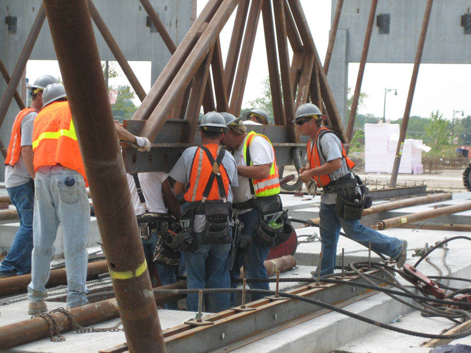
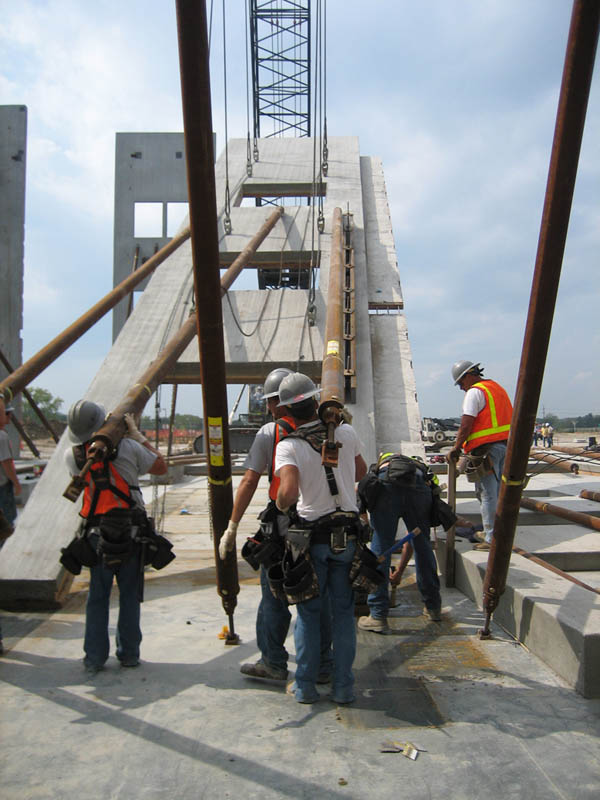

<div class="row">
 <div class="large-12 columns">
  <h1>
   safety by controlled environment
  </h1>
  <p>
   <a href="../Images/construction/men-rigging-panel.jpg">
    
   </a>
   The construction business is now and in many ways, has always been dangerous. At Meyer Brothers Building Company, we believe that it is possible to control, if not eliminate most accidents.
  </p>
  <p>
   By controlling our actions and attitudes we can have a serious effect on the security of individual jobs and the well-being of all employees. People are our most valuable asset. We intend to guard lives with more energy than we devote to guarding our reputation, our property and profitability.
  </p>
  <p>
   It is the policy of Meyer Brothers Building Company that the safety of our employees is considered a vital aspect of our operations.
  </p>
  <p>
  
   Their safety must be considered first when planning for construction. Management intends to provide the leadership and funds necessary to eliminate unsafe practices and conditions at our construction sites.
  </p>
  <p>
   Meyer Brothers Building Company intends to formulate a specific safety program tailored to each jobsite. This program will include enforcement procedures for our own employees as well as enforcement for the subcontractors. We are committed to the safety and welfare of all employees on this jobsite.
  </p>
  <h1>
   S.T.E.P. Award Recipient on the platinum level
  </h1>
  <p>
   The last two years Meyer Brothers Building Co. has been recognized by Associated Builders and Contractors for our superior level of commitment to safety with the highest level S.T.E.P Award. This award commends our development and adherence to a top quality safety program for 2007.
  </p>
 </div>
</div>
